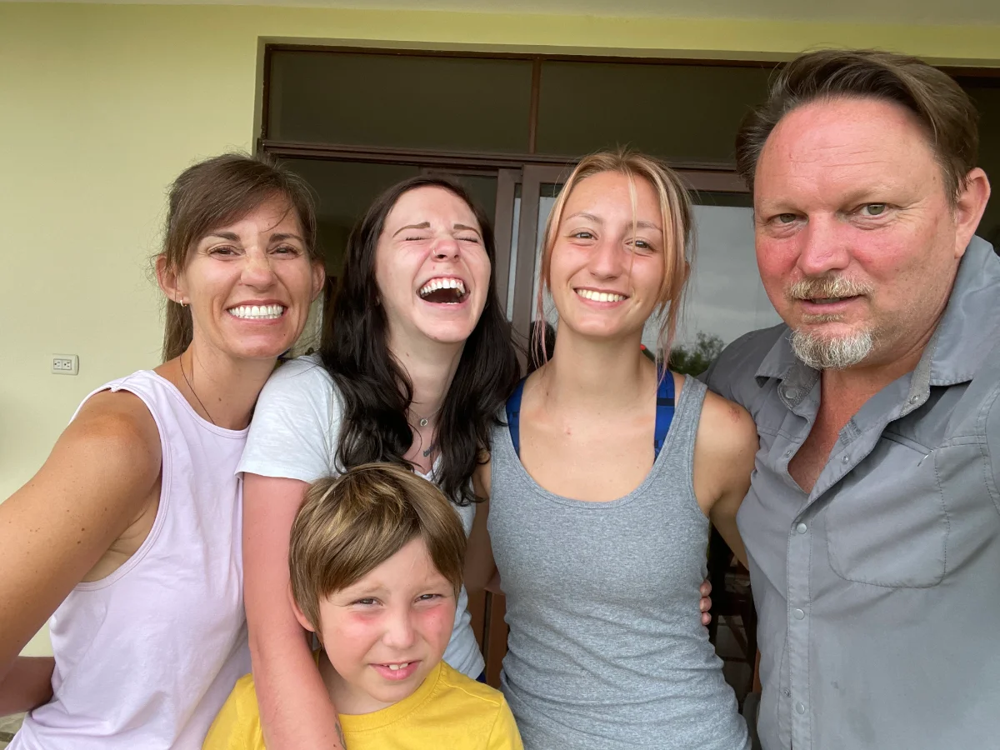

Lyme Immunotherapy: Retraining the Immune System After Lyme
There's a treatment approach for chronic Lyme that most people have never heard of — one that doesn't just try to kill the infection, but works to teach a worn-out, overreacting immune system how to govern itself again. My own family went through all of it. Here's an honest look at how it works.


Key takeaways
- The target is different. Most Lyme treatment tries to kill infection. This aims at immune dysregulation — the overreacting immune system that can keep you sick after the bacteria are handled.
- It's a sequence, not a single therapy. Lyme Re-code stages three programs — Treg recalibration → clear/rebuild/restore → the full protocol with hyperthermia — because each step prepares the body for the next.
- Order and readiness matter. Intense therapies like hyperthermia are done last, on a prepared immune system — "more is not better."
- It's delivered in Tijuana, Mexico, within the Immunotherapy Institute, minutes from San Diego.
- This is emerging, not a guaranteed cure. Results vary; a medical team screens candidacy; talk it through before committing.
Quick answer
What is Lyme immunotherapy / Lyme Re-code?
Lyme Re-code is an integrative immunotherapy program for chronic Lyme, delivered within the Immunotherapy Institute in Tijuana, Mexico. Instead of only trying to kill infection, it aims to help a dysregulated immune system govern itself again — through a staged sequence of autologous regulatory T-cell (Treg) therapy, therapeutic apheresis, and, in the full program, systemic perfusion hyperthermia. The guiding idea is that the sequence, and the body's readiness, matter as much as the therapies themselves.
When the infection's handled, but you're still sick
If you've done the hard work — a real diagnosis, real treatment, maybe even whole-body hyperthermia abroad — and you're still unwell, still inflamed, still collecting strange new symptoms, you are not imagining it. After years of chronic infection, the immune system can get stuck in overdrive. Even once the trigger is gone, it keeps firing, driving inflammation, autoimmune-type flares, allergies, and new sensitivities.
That's the gap most treatment leaves behind: clearing infection and restoring immune regulation are two different jobs. Lyme immunotherapy is built around that second job. (For the deeper science of the immune side, see my guide to Treg therapy for Lyme.)
What is Lyme Re-code / the Immunotherapy Institute?
Lyme Re-code is a chronic-Lyme immunotherapy program operated within the Immunotherapy Institute in Tijuana, Mexico — minutes from the San Diego border. Its whole philosophy is about sequence and terrain: you don't apply deep interventions to a system that hasn't been prepared to receive them. As they put it, "more is not better" — a prepared immune system responds completely differently from an unprepared one.
I came to know the program well enough that I now serve on its Clinical Advisory Board — but the reason I trust it enough to write about it is simpler than that: I watched it work in my own home.
The three-step sequence, in plain terms
Most chronic-Lyme treatment addresses one layer at a time. Lyme Re-code stages three programs so each one creates the conditions the next one needs. Most people start with Step 1 or Step 2; Step 3 comes when the body is ready to go deeper.
Immune Recalibration
Autologous T-Regulatory Cell (Treg) Therapy
In chronic Lyme the problem is rarely a weak immune system — it's a misguided one that has lost the ability to regulate itself. Three applications of autologous Treg therapy (made from your own T-regulatory cells) aim to restore that "brake," teaching the immune system to work correctly again rather than suppressing it. It's the foundation the later steps build on — a dysregulated immune system doesn't respond to other therapies the way it should.
Clear · Rebuild · Restore
Therapeutic Apheresis → IV Therapy → Treg Therapy
Three layers, in a deliberate order. Apheresis filters the blood to clear years of inflammatory debris — cytokines, immune complexes, mycotoxins — that work against any treatment you introduce. IV therapy then rebuilds the body at the cellular level. Finally, Treg infusions restore immune governance into a body that's been prepared to receive them. The sequence matters as much as the therapies: you can't regulate an immune system still flooded with the signals driving its dysfunction.
The Full Protocol
Treg + Apheresis + Systemic Perfusion Hyperthermia
The complete program adds the most powerful pathogen-targeting layer — systemic perfusion hyperthermia, raising core body temperature up to about 42 °C (107.6 °F) under continuous medical monitoring, a temperature at which Borrelia and co-infections struggle to survive. Crucially, it comes last: applied to a dysregulated, uncleared system, intense heat can amplify dysfunction; applied to a recalibrated, prepared one, it's intended to go somewhere different entirely. It's paired with Treg therapy, apheresis, a full IV stack, and a multidisciplinary support team.
Program details reflect the clinic's published information and can change — always confirm current specifics directly. See the full programs at lymeimmunotherapy.com →
Why the order is the treatment
This is the part that took me a while to really get: the same therapy can help or harm depending on the state of the body receiving it. Hyperthermia on an inflamed, dysregulated immune system can amplify the chaos. On a recalibrated one, it lands differently. That's why Lyme Re-code prepares the foundation first — recalibrate, then clear and rebuild, then go deep. The terrain matters. The sequence is the treatment.
Who it's for
It's generally considered for people with chronic Lyme, Bartonella, Babesia, and other tick-borne co-infections — especially when the immune system feels like it's overreacting rather than fighting correctly. Because the same pattern of immune-regulatory depletion shows up elsewhere, people with long COVID, mold illness / CIRS, or chronic EBV are sometimes a fit too. Which program you'd start with — and whether it's appropriate at all — is determined by a medical team during intake, based on your inflammatory burden, symptoms, and goals. It's an emerging, integrative approach delivered abroad, not a guaranteed cure, and it doesn't replace qualified medical care.
Our family walked all three steps
I don't write about this program as an outside observer. In 2017 our whole family went through whole-body hyperthermia in Germany — and what happened afterward is exactly why the immunotherapy sequence exists.
My husband, James. The hyperthermia cleared his infection — but in the years that followed, his immune system seemed to turn on him: rheumatoid arthritis, chronic pain and inflammation, skin breakouts, new sensitivities. The bug was gone; the dysregulation was worse than ever. He went through autologous Treg therapy — two rounds, one of them paired with apheresis — to help his immune system relearn how to regulate itself. With his medical team guiding every change, his pain and inflammation eased, his gluten intolerance lifted, and his acne cleared. (His fuller story is in the Treg therapy guide.)
Our daughter, Isabella. She was treated with hyperthermia in Germany at 14 and recovered — then was bitten again in college and, this time, hit harder, with new co-infections. Now 23, she has been living with this current infection for just over two years. She has improved dramatically since going through Treg therapy and apheresis, and is scheduled for systemic hyperthermia — the full 18-day protocol — in October 2026. I'll be walking it beside her, the way I wish someone had walked it beside us the first time.
I'm not sharing this to sell you anything. I'm sharing it because for years we didn't even know this category of help existed — and if it's the missing piece for your family the way it was for mine, I want you to know it's there.
Please hear this clearly: every medication change in our family was made with the doctors managing that person's care, and what happened for us is not a promise for anyone else. Results genuinely vary.
What to expect & getting started
It begins with a consultation. The clinic's case managers review your full history and recommend the right program — and the right starting point — based on your inflammatory burden, symptoms, and goals. Treatment is outpatient in Tijuana (8, 10, or 18 days); meals and airport shuttle are included, travel and lodging are not, and a preferred rate is offered at a nearby partner hotel.
Cost is discussed directly during that consultation, since the right program and length vary by person. As an overseas, largely experimental treatment, it's generally paid out of pocket — my honest guidance on the money side is in what treatment abroad really costs and how families pay for it.
The best first step, though, isn't a form — it's a conversation. Talk it through with me first, free and with zero pressure. I'll give you an honest read on whether this is even worth pursuing for your situation before you spend a dollar or book a flight.
Lyme immunotherapy FAQ
Lyme Re-code is an integrative immunotherapy program for chronic Lyme, delivered within the Immunotherapy Institute in Tijuana, Mexico. Instead of only trying to kill infection, it aims to help a dysregulated immune system govern itself again — through a staged sequence of autologous Treg therapy, therapeutic apheresis, and, in the full program, systemic perfusion hyperthermia. The sequence and the body's readiness are treated as part of the treatment.
Antibiotics and hyperthermia target infection. Autologous Treg therapy targets immune dysregulation — the over-firing immune system that keeps driving inflammation after the trigger is handled. It uses your own regulatory T cells to restore self-regulation, teaching the immune system to work correctly rather than suppressing it.
Apheresis filters the blood to remove accumulated inflammatory debris — cytokines, immune complexes, mycotoxins, pathogen-derived material. In this sequence it's used first, to clear that burden so the recalibrating therapies land on a cleaner, more responsive environment. It's more experimental than standard care, and suitability is assessed by the medical team.
Systemic perfusion hyperthermia (core temperature up to ~42 °C / 107.6 °F, under continuous monitoring) is applied only after the immune system is recalibrated and the inflammatory burden cleared. On a dysregulated, uncleared system intense heat can amplify dysfunction; on a prepared one it's intended to achieve more targeted, durable results. The order is deliberate.
Most people start with the 8-day (Treg recalibration) or 10-day (apheresis + IV + Treg) program; the 18-day full protocol with hyperthermia usually comes after the body is prepared. The right starting point depends on your inflammatory burden, symptoms, and goals, and is recommended by the clinic's case managers at intake. Selected complex cases may begin with the 18-day.
It's generally considered for chronic Lyme and co-infections (Bartonella, Babesia) — especially when the immune system feels like it's overreacting. The same immune-regulatory pattern appears in long COVID, mold illness / CIRS, and chronic EBV, so those patients are sometimes a fit too. Candidacy is evaluated by qualified medical professionals.
It's delivered within the Immunotherapy Institute in Tijuana, Mexico — minutes from San Diego. Programs are outpatient and run 8, 10, or 18 days. Meals and airport shuttle are included; travel and lodging are not, though a preferred hotel rate is offered.
Pricing is discussed with the clinic at consultation, since the right program varies by person. As an overseas, largely experimental treatment it's generally not covered by U.S. insurance and is paid out of pocket. Talking with Christina first is a free way to understand the options before committing.
It's an emerging, integrative approach, not an established standard of care, and it isn't marketed as a guaranteed cure. Some patients report meaningful improvement; results vary. It's best considered as one part of an individualized plan, with candidacy and safety assessed by qualified medical professionals.
Medical disclaimer: This page is for educational purposes only and reflects personal experience and general information about a program the author has a disclosed relationship with. It is not medical advice, diagnosis, or treatment, and it does not replace consultation with a qualified healthcare professional who knows your individual history. Christina Carter is a patient advocate and educator, not a licensed medical provider. The therapies described are emerging and largely experimental; treatments and outcomes vary from person to person, and the results described here are personal and not typical or guaranteed. Never start, stop, or change any medication except under the direction of your prescribing physician.